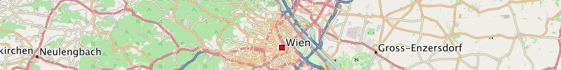
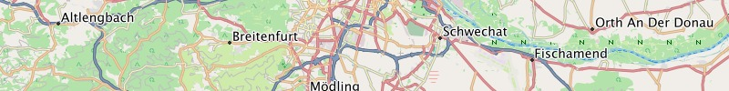
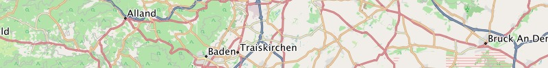
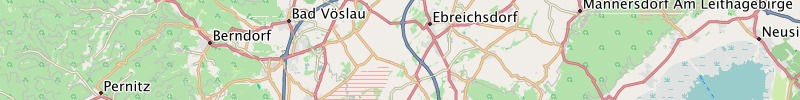

Garmin GPS-Gerät: Österreich - Installationsimage für Micro-SD-Karte (0.3 GB)
Download
Microsoft Windows: Österreich - Installationsarchiv für Garmin BaseCamp (0.3 GB)
Download
Apple Mac OS X: Österreich - Installationsarchiv für Garmin BaseCamp (0.3 GB)
Download
Alle Betriebssysteme: Österreich - Imageverzeichnis für QLandkarte (0.3 GB)
DownloadViel Freude an den Freizeitkarten ... und viele interessante Touren damit